What You Will Have at the End
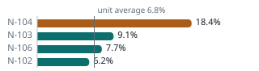
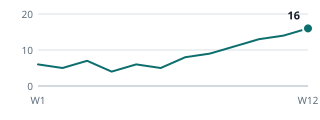
| User | Override | Waste | Late waste |
|---|---|---|---|
| N-104 | 18.4% | 23.6% | 7 |
| N-103 | 9.1% | 10.1% | 2 |
| N-106 | 7.7% | 11.2% | 1 |
One page, one data file, ten steps. The build takes an afternoon on a clean extract. An AI assistant writes the formulas; you supply the column names and check the numbers. No real data ever goes to the AI.
What Each Visual Monitors
Six visuals cover most of a diversion program's weekly review. Each one below says what it watches and what good and concerning look like. The build steps produce the second one; the others reuse the same method with a different measure.
Waste Rate by User
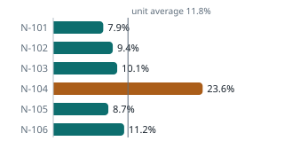
- Monitors
- The share of each user's controlled-substance removals that end in a documented waste, next to the unit average.
- Good
- Users cluster around the average and the order changes week to week.
- Concerning
- One user sits at about twice the average on the same drugs for several weeks running.
Override Rate by User
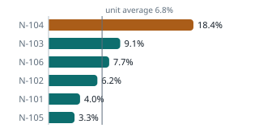
- Monitors
- Removals taken without a verified order, as a share of all removals, per user.
- Good
- A low unit rate that is flat or falling, with no user far from the pack.
- Concerning
- A user several times above the average, or overrides concentrated at night or at shift change.
Discrepancy Trend
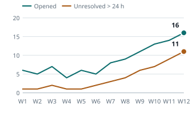
- Monitors
- Count discrepancies opened each week, and how many were still unresolved after 24 hours.
- Good
- Both lines flat and low; discrepancies closed on the same shift.
- Concerning
- Either line climbing for three weeks or more, or the unresolved share growing on one unit.
Barcode Scanning Compliance
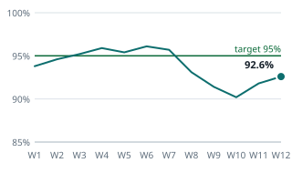
- Monitors
- Administrations where both the patient wristband and the medication were scanned, as a share of all administrations.
- Good
- At or above the target and steady, with skipped scans spread thinly across staff.
- Concerning
- A drop below target that persists, or skipped scans concentrated in one user on controlled substances.
Minutes to Waste
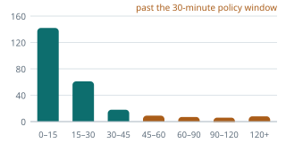
- Monitors
- The time between a removal and the documentation of its waste, bucketed in minutes.
- Good
- Nearly all wastes inside the policy window, with a short tail.
- Concerning
- A long tail past the window, or one user who owns most of it.
Off-Hours Access Pattern
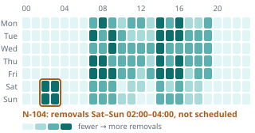
- Monitors
- When one user removes controlled substances, by weekday and hour, against the hours they are scheduled.
- Good
- Dark cells match the user's shifts and nothing else.
- Concerning
- Removals at hours the user is not scheduled, or clustered at 02:00 to 04:00 on weekends.
The Build, Step by Step
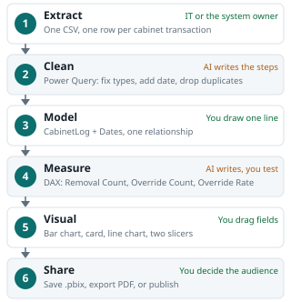
The steps below follow the pipeline from top to bottom. Each one names the buttons, shows what the screen looks like and ends with what you now have.
About the pictures: the Power BI windows on this page are drawings made to show where each button and pane sits. They are not screenshots, so your screen will look different in colour, icons and spacing, and Microsoft moves things between updates. Every step links to Microsoft's own guide for that task, which shows the real interface.
-
1
Install Power BI Desktop
Power BI Desktop is free. On a hospital device it must come from the approved software catalog, so the first action is a ticket.
- Ask IT for Power BI Desktop from the software catalog, or the Microsoft Store version if that is allowed.
- Open it. Close the welcome screen. You are on Report view with a blank white canvas.
- If IT says no, start in Excel instead. Steps 3 and 4 work the same in Excel's Data tab, and the measures carry over later.
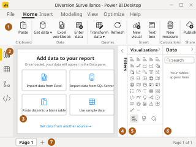
Interface mockup: whole window Power BI Desktop on a new report. 1 Ribbon with the File, Home, Insert, Modeling, View, Optimize and Help tabs. 2 Report view, Table view and Model view icons; the yellow band marks the active one. 3 Report canvas, showing the Add data tiles until a table is loaded. 4 Filters pane, collapsed to a strip. 5 Visualizations pane with the chart gallery. 6 Fields pane, labeled Data in current builds. 7 Page tabs. Ask the AI"I am a nurse with no Power BI experience. I will paste you my column names, never real data. Keep every answer to the exact clicks and the exact formula."
You now have: Power BI Desktop open on an empty report.
Microsoft's guideDownload Power BI Desktop
-
2
Get One Extract as a CSV
Ask the system owner of your dispensing cabinets for one file: one row per transaction, 90 days, fixed column names. It is the only data this tutorial needs.
Synthetic sample, invented rows The six columns the build uses. These five rows are invented; your real file stays on your work device. Ask the AI"Here are my column names: transaction_id, employee_id, unit, transaction_type, override_flag, transaction_datetime. Write a one-line data dictionary for each."
You now have: A CSV in an approved folder, plus a data dictionary you can paste to the AI instead of the data.
Microsoft's guideData Sources in Power BI Desktop
-
3
Load the File with Get Data
Power BI reads the file through a window called Power Query. Choose Transform Data rather than Load so you can fix the columns first.
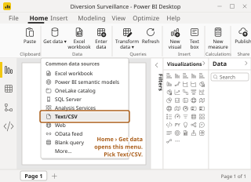
Interface mockup: Home ribbon, Get data menu Home tab, Get data pressed. The Common data sources menu lists Excel workbook, SQL Server, Text/CSV and the rest; Text/CSV is the one to pick for the extract. - Home › Get data › Text/CSV.
- Pick the file › Open.
- In the preview window click Transform Data.
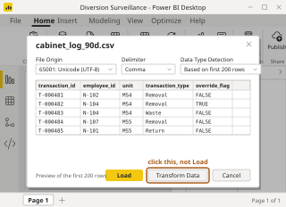
Interface mockup: Text/CSV preview dialog The preview dialog that opens after you pick the file. Leave File Origin, Delimiter and Data Type Detection alone. Load is the default; click Transform Data instead so the columns can be fixed first. You now have: The Power Query editor open with your columns across the top.
Microsoft's guidePower Query Text/CSV Connector
-
4
Clean the Columns in Power Query
Four changes make the file usable. Each one becomes a line in the Applied Steps list on the right, and any one can be undone by clicking its ✕.
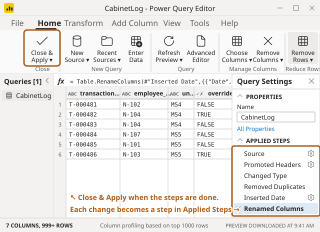
Interface mockup: Power Query Editor Power Query Editor is its own window. Queries pane on the left, the formula bar and data preview in the middle with a type icon on every column header, and Query Settings on the right with the Applied Steps list. The last step is selected; Close & Apply sends the clean table into the model. - Click the small icon on each column header and set the type: Whole Number for quantity, True/False for override_flag, Date/Time for transaction_datetime, Text for the rest.
- Select the transaction_id column › Home › Remove Rows › Remove Duplicates.
- Select transaction_datetime › Add Column › Date › Date Only. Double-click the new header and rename it transaction_date.
- Rename the query itself to CabinetLog in the Query Settings pane.
- Home › Close & Apply.
Ask the AI"My transaction_datetime column loads as text like 2024-05-06 07:42. Give me the Power Query step to make it Date/Time."
You now have: A clean CabinetLog table in the Data pane with the right types and a transaction_date column.
Microsoft's guideQuery Overview in Power BI Desktop · The Power Query User Interface
-
5
Add a Dates Table
Weekly and monthly charts need a table with one row per calendar day. One DAX line creates it.
Dates = CALENDARAUTO ()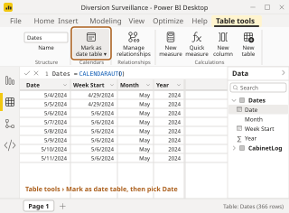
Interface mockup: Table view, Table tools ribbon Table view after the formula is entered: the Table tools ribbon appears with Mark as date table, the formula bar holds the one DAX line, and the Data pane lists the new table. The Week Start column comes from the third click below. - Modeling › New table. Paste the line above into the formula bar and press Enter.
- With the Dates table selected: Table tools › Mark as date table › choose the Date column › OK.
- Modeling › New column and paste:
Week Start = Dates[Date] - WEEKDAY ( Dates[Date], 2 ) + 1
The Power Query section of the technical guide has a fuller date table with fiscal periods if you need one later.
You now have: A Dates table covering every day in your extract, with a Week Start column.
Microsoft's guideSet and Use Date Tables in Power BI Desktop · CALENDARAUTO Function (DAX)
-
6
Draw the Relationship
The model needs to know that each transaction happened on one date. You draw that as a single line in Model view.
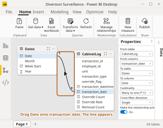
Interface mockup: Model view Model view after the drag: each table is a card, and the line from Dates[Date] to CabinetLog[transaction_date] carries a 1 at the Dates end and a * at the CabinetLog end. Clicking the line fills the Properties pane with Cardinality and Cross-filter direction. - Click the Model view icon on the left edge (three linked boxes).
- Drag the Date field from the Dates table and drop it on transaction_date in CabinetLog.
- Double-click the line. Confirm Cardinality: Many to one and Cross-filter direction: Single. OK.
- Click the Report view icon to go back to the canvas.
The star-schema section explains the relationship rules when you add more tables.
You now have: A model where filtering a date also filters the transactions.
Microsoft's guideCreate and Manage Relationships in Power BI Desktop · Model View in Power BI Desktop
-
7
Create the Three Measures
A measure is a formula that recalculates for whatever is on the chart. Create these three, one at a time, in this order.
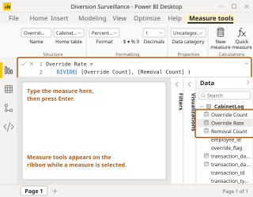
Interface mockup: formula bar, Measure tools Report view with the third measure in the DAX formula bar. The Measure tools ribbon appears while a measure is selected and holds the Format and decimal-places settings; the Data pane shows all three measures with the calculator icon. Removal Count = CALCULATE ( COUNTROWS ( CabinetLog ), CabinetLog[transaction_type] = "Removal" )Override Count = CALCULATE ( COUNTROWS ( CabinetLog ), CabinetLog[transaction_type] = "Removal", CabinetLog[override_flag] = TRUE () )Override Rate = DIVIDE ( [Override Count], [Removal Count] )- In the Data pane right-click CabinetLog › New measure.
- Paste the first measure into the formula bar. Press Enter. Repeat for the other two.
- Click Override Rate in the Data pane. On the Measure tools ribbon set Format: Percentage, decimals 1.
- If your file spells the type differently, change
"Removal"to the exact word in your transaction_type column.
Ask the AI"Explain each function in this measure in one sentence each, then tell me what input would make it return a wrong answer." Paste the measure, not your data.
The DAX library holds tested measures for waste rate, late waste, discrepancies and peer comparison that follow the same pattern.
You now have: Three measures with a calculator icon in the Data pane. Nothing is on the canvas yet.
Microsoft's guideMeasures in Power BI Desktop
-
8
Build the First Visual
Drag two fields into two wells and the chart appears. The Format visual tab turns on data labels, and the Analytics tab adds the average line.
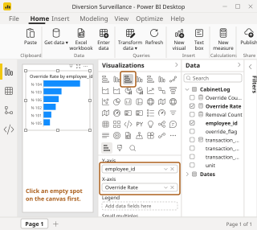
Interface mockup: Visualizations and Data panes The Visualizations pane with Clustered bar chart picked in the gallery, employee_id in the Y-axis well and Override Rate in the X-axis well. The same two fields are ticked in the Data pane and the chart is drawn on the canvas with its selection frame. - Click an empty spot on the canvas, then click the Clustered bar chart icon in the Visualizations pane.
- From the Data pane drag employee_id into Y-axis and Override Rate into X-axis.
- Click the … on the visual › Sort axis › Override Rate, then Sort descending.
- Open the Format visual tab (paintbrush) › Data labels › On.
- Open the Analytics tab (magnifier) › Average line › Add line.
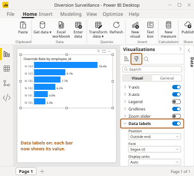
Interface mockup: Format visual tab The Format visual tab of the Visualizations pane. Data labels is switched on and expanded to its real properties: Position, Font, Display units and Value decimal places. The canvas now shows a value on every bar. 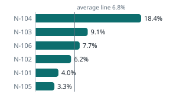
Example chart, illustrative values What the canvas shows after step 8: override rate by employee id, sorted, with the average line. You now have: A working chart. Save the file now: File › Save, name it and keep it in an approved folder.
Microsoft's guideAdd Visualizations to a Power BI Report · Use the Analytics Pane in Power BI
-
9
Add the Card, the Trend and the Slicers
Three more visuals turn one chart into the dashboard from the top of the page. Each one uses the same measure.
- Click empty canvas › Card icon › drag Override Rate into Fields.
- Click empty canvas › Line chart › drag Dates › Week Start into X-axis and Override Rate into Y-axis.
- Click empty canvas › Slicer › drag Dates › Date into Field. It becomes a date range.
- Add a second Slicer with CabinetLog › unit.
- Click a bar in the bar chart. Every other visual filters to that user. Click it again to clear.
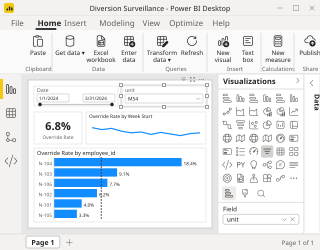
Interface mockup: finished page The page after step 9 in Report view: date-range slicer, unit slicer (selected, so the Visualizations pane shows Slicer and its Field well), the card, the weekly line and the bar chart from step 8. Override rate6.8%Override rate by week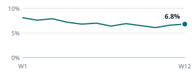
Example visuals, illustrative values The card and the line chart after step 9, with the same illustrative values as the hero mockup. The dashboard design section lays out a six-page report once the first page is working.
You now have: A one-page dashboard that answers "who, how much, and is it getting better".
Microsoft's guideCreate a Card Visual in Power BI · Line Charts in Power BI · Overview of Slicers in Power BI
-
10
Save, Export and Share
A saved report file opens for anyone with Power BI Desktop. A PDF goes through the same channels as any confidential document. Publishing needs IT.
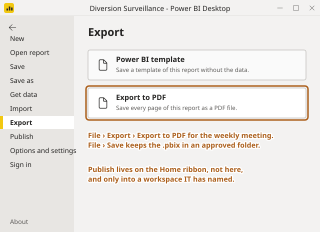
Interface mockup: File menu The File menu with Export selected. Export to PDF sits next to Power BI template; Save and Save as are higher in the same list. 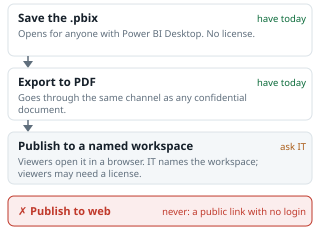
Diagram Three ways to deliver the report, from the one you have today to the one IT has to approve. - File › Save keeps the .pbix in your approved folder.
- File › Export › Export to PDF for the weekly surveillance meeting.
- Home › Publish only into a workspace IT has named. Never use Publish to web.
- Run the validation checklist below before the first viewer sees a number.
Refresh, row-level security and the HIPAA controls for the Power BI service are in the governance section.
You now have: A report you can refresh by opening the file and clicking Home › Refresh when a new extract arrives.
Microsoft's guideExport Power BI Reports to PDF · Publish from Power BI Desktop
Validate Without Sharing PHI
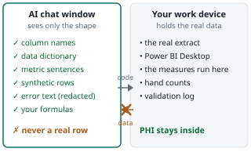
The AI never sees a real row, not even one pasted as an example. When you need sample data, ask the AI to invent it from your column list and write down the right answers before you load it.
"Here is my data dictionary: [paste]. Generate 40 fictional rows as CSV with employee IDs N-101 to N-106, units MS4 and MS5, at least five overrides, one duplicate row and one row at 23:59. Then list the override rate per employee so I can test my measure."
The Six Checks Before Anyone Sees a Number
- Synthetic known answer. Load the invented file. Every measure returns the answer you wrote down before loading it.
- Hand count. Filter the real CSV in Excel for one user and one week and count. The measure matches exactly.
- Row total. A table visual with
COUNTROWS ( CabinetLog )equals the row count of the file. - Boundaries. A row at 23:59, a row at 00:01, a duplicate and a blank flag each land where your definition says.
- Filters. Change the date and unit slicers. Every visual moves and the card still matches the bars.
- Second reader. A pharmacist or analyst who did not build it repeats one hand count and signs the log.
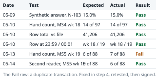
If a real row reaches an AI tool by mistake, report it the same day through your organization's privacy process. Do not try to delete it quietly.
Under the HIPAA Safe Harbor standard at 45 CFR 164.514(b), dates more specific than a year and record numbers of any kind are identifiers, so removing names is not de-identification. The governance section of the prompt library covers the paste-check in more detail.
A Nurse Built This with AI
A nurse with no prior programming or Power BI experience built a barcode-scanning compliance report using AI as her only source of technical help. The report worked and produced excellent results for her program. The values below are invented to show the shape of such a report; nothing here describes her, her institution or her numbers.
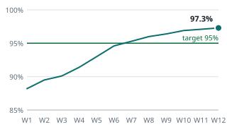
Her data came from one EMR extract, one row per administration, with two true/false columns: patient scanned and medication scanned. The build is steps 2 to 9 above with a different table and three different measures.
Administrations = COUNTROWS ( Admins )
Scanned Both =
CALCULATE (
COUNTROWS ( Admins ),
Admins[patient_scanned] = TRUE (),
Admins[med_scanned] = TRUE ()
)
Scan Compliance = DIVIDE ( [Scanned Both], [Administrations] )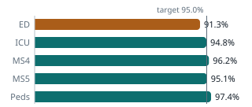
- Monitors
- Which units and which staff are scanning both the wristband and the medication, and how often a scan is skipped.
- Good
- Every unit at or above target; skipped scans explained by a few reason codes spread across many staff.
- Concerning
- One unit well below the rest, or skipped scans on controlled substances concentrated in one person.
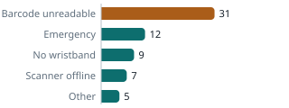
Three visuals, one extract and the six checks above were enough for a report her program used. The division of work was the same as on this page: the AI supplied syntax, she supplied the definition of a compliant administration and the judgment about which number looked wrong.
A Second Build, Narrated: Governance First
The walkthrough above gets you to a working report fast. This one is slower on purpose. It follows how a compliance analyst who builds these reports for a living actually works with AI — four sessions, a synthetic controlled-substance dataset, and at least one moment where the AI gets a confidently wrong answer and has to be corrected.
“AI is frequently in error but never in doubt. Question everything.”
Stable source documents — a data dictionary and a design specification, reloaded whenever an answer drifts — are what cut down the hallucinations, not a better prompt.
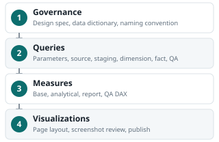
The 12-Item Design Specification
Before any query or measure, the governance session answers twelve questions and writes the answers down. This sheet goes back into the AI's project resources, and gets reloaded any time its answers start drifting from the report's purpose.
- Business problem
- Intended users
- Decisions supported
- Source systems
- Required fields
- Business definitions
- Measures and calculations
- Refresh frequency
- Security requirements
- Validation criteria
- Expected visuals
- Known limitations
-
1
The Messy Source Folder
A fictional SharePoint folder holds four well-named weekly files and one that is not. The naming convention, not a person re-reading every file, decides what Power BI loads.
Fictional SharePoint FolderFile Loads? DiversionTransactions_2026-07-04.csv included DiversionTransactions_2026-07-11.csv included DiversionTransactions_2026-07-18.csv included DiversionTransactions_2026-07-25.csv included Diversion Report FINAL new.csv excluded We do not know what that fifth file is — a replacement, a one-off pull, an earlier draft someone forgot to delete. A naming-convention rule (only files beginning
DiversionTransactions_) keeps it out of the model until someone answers that question on purpose.This is also where the volume problem starts. The same SharePoint folder that gets a new file every week, kept for years, is millions of rows during every refresh if nothing is archived. The specific patterns that bog a query down on that scale:
row-by-row custom functions nested joins repeated sorting Table.SelectRows inside per-row logic index-based comparisons text search over large columns DAX iterators over large tables calculated columns that belong upstream
You now have: A folder with a naming rule, an excluded file pending a decision, and a reason to filter dates and archive early rather than let every historical file re-scan on every refresh.
-
2
AI Builds the Data Dictionary — by Interviewing You
Ask the AI“I am building a Power BI controlled-substance monitoring report using synthetic data. Review the following field names and ask me the questions you need answered before recommending calculations or visuals. Do not assume the meaning of a field. Identify fields that may be ambiguous.” — then paste the column headers. No real data.
A good AI stops and asks questions back instead of writing DAX immediately. If it starts generating measures off column names alone, that is the signal to stop it.
- What is the grain of the table — one row per transaction, or per medication event?
- Is Transaction ID unique?
- What qualifies as a discrepancy?
- Can a discrepancy be identified but unresolved?
- What does a blank witness field mean?
- Are overrides always exceptions?
- What time zone is used?
- Are returns represented as negative quantities?
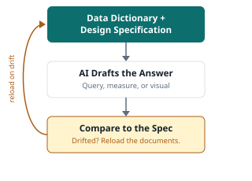
Governance resource The data dictionary and design spec are not a one-time memo. They are project resources the AI keeps referencing, and the thing you reload whenever an answer drifts. The sign convention trap: a negative quantity can mean a medication was removed, or that it was returned — and that meaning varies by system. Get this wrong at the dictionary stage and every downstream measure inherits the error silently.
You now have: A data dictionary written as an instruction manual: table name, field, plain-language meaning, type, grain, key, allowed values, null meaning, and the sign convention, spelled out rather than assumed.
-
3
Combine the Weekly Files
Ask the AI“Write Power Query M code to combine CSV files from a SharePoint folder. Only include files beginning with DiversionTransactions_. Use the first row as headers, enforce the supplied data types, add the source filename, and retain records dated on or after January 1, 2026. Return the complete query and explain each major step.”
Source = SharePoint.Files("https://hospital.sharepoint.com/sites/Compliance"), Filtered = Table.SelectRows(Source, each Text.StartsWith([Name], "DiversionTransactions_")), Combined = Table.Combine(Table.AddColumn(Filtered, "SourceFile", each [Name])[Content]), Headers = Table.PromoteHeaders(Combined, [PromoteAllScalars=true]), Typed = Table.TransformColumnTypes(Headers, DataTypes), DateFiltered = Table.SelectRows(Typed, each [Transaction Date] >= StartDate)Give AI the complete query to return, not fragments that depend on a step name it has to guess. The exact previous-step name, exact column names, required types, file-name pattern and date range all go in the prompt.
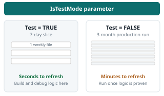
Parameters A StartDate / test-mode parameter switches the same query between a 7-day slice for development and the full production run, without touching the M code. What to point out on screen: the source filename is retained, unnecessary columns are dropped early, types are assigned deliberately, date filtering happens before anything expensive, helper queries stay unloaded, and the odd file is excluded by the naming rule — not by someone remembering to skip it.
You now have: A combine query organized into layers — parameters, source, staging/helper, dimension, fact, QA — so a dozen queries stay navigable instead of one long unreadable one.
-
4
Intentionally Create a Data Problem
Duplicate one synthetic transaction row in a weekly file and refresh. The report still loads. Nothing on the canvas turns red. The transaction count is simply one higher than it should be, and a convincing AI narrative about why volume "increased" is one click away.
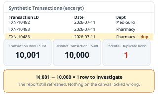
QA catch Row count and distinct-key count disagree by exactly the number of duplicate rows introduced. That gap is the thing to investigate, not a chart. Transaction Row Count = COUNTROWS('Synthetic Transactions') Distinct Transaction Count = DISTINCTCOUNT('Synthetic Transactions'[Transaction ID]) Potential Duplicate Rows = [Transaction Row Count] - [Distinct Transaction Count]These three measures live in the model, on a restricted QA page — not in a spreadsheet nobody reopens. If total rows are 10,001 and distinct Transaction IDs are 10,000, that is where to look before anyone presents a trend.
You now have: A QA measure that catches a duplicate load before it becomes a false finding, plus the habit of checking it on every refresh.
-
5
Build the Semantic Model
One fact table, four dimensions: Synthetic Transactions, plus Date, Location, Medication Category and Exception Type. A large amount of difficult DAX is usually compensation for a weak data model — so this step comes before the measures, not after.
- What one row in the table represents
- The key, and whether it is unique on the dimension side
- Which table filters which, and in what direction
- Cardinality of every relationship
- How blanks and unmatched keys are handled
A relationship can look correct in Model view while records silently fall into a blank category underneath it. Test for unmatched keys before trusting the diagram.
You now have: A fact-and-dimension model with every table's grain, key and filter direction written down.
-
6
Use AI to Draft Measures
Ask the AI“Write Power BI DAX measures for total transactions, transactions with a discrepancy, unresolved discrepancies, and discrepancy rate. Use measures rather than calculated columns. A discrepancy is present when Discrepancy Identified equals Yes. A discrepancy is unresolved when Discrepancy Identified equals Yes and Discrepancy Resolved does not equal Yes. Exclude blank Transaction IDs. Return each measure separately and include a QA measure for each calculation.”
Total Transactions = CALCULATE( DISTINCTCOUNT('Synthetic Transactions'[Transaction ID]), NOT ISBLANK('Synthetic Transactions'[Transaction ID]) ) Transactions with Discrepancy = CALCULATE( [Total Transactions], 'Synthetic Transactions'[Discrepancy Identified] = "Yes" ) Unresolved Discrepancies = CALCULATE( [Total Transactions], 'Synthetic Transactions'[Discrepancy Identified] = "Yes", 'Synthetic Transactions'[Discrepancy Resolved] <> "Yes" ) Discrepancy Rate = DIVIDE( [Transactions with Discrepancy], [Total Transactions] )The important part of this prompt is not “write DAX.” The important part is that the logic — what counts as a discrepancy, what counts as unresolved — was defined before the AI touched it. AI cannot make that business decision; it can only encode it correctly or incorrectly.
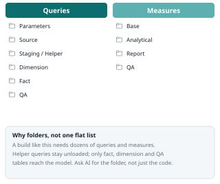
Organization Measures and queries both get organized into families and folders once the count climbs past a handful — this is also where base, analytical, report and QA measures live apart from each other. You now have: Four measures plus a QA measure for each, ready to be tested against known records before anything is published.
-
7
Let the AI Make a Mistake
Ask the AI“Which department has the worst diversion performance?”
The AI ranks departments by raw discrepancy count. Department A: 50 discrepancies. Department B: 20. Fifty is greater than twenty, so Department A is reported as worse. That is mathematically true and analytically misleading.
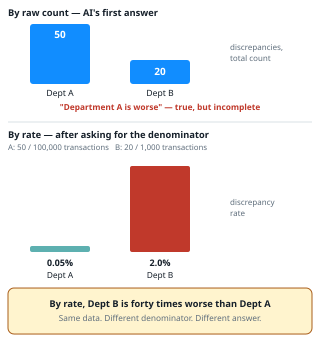
The correction Department A had 100,000 transactions; Department B had 1,000. By rate, Department B is forty times worse. Same data, different denominator, different answer. Ask the AI“Do not rank departments using the raw discrepancy count alone. Compare both discrepancy volume and discrepancy rate, explain the denominator, and identify any department where low transaction volume may make the rate unstable.”
This is one of the most useful moments to demonstrate live, because the AI did exactly what it was asked. The problem was an incomplete question, not a broken model — and a 20-discrepancy department with only 1,000 transactions also deserves a note that its rate is unstable at low volume.
You now have: A corrected answer that reports both volume and rate, and a reusable lesson about always asking for the denominator.
-
8
Design the Report Page
CS Surveillance · Syntheticlayout mockupTotal Transactions214,880Discrepancy Rate1.4%Unresolved12Avg Resolution Hrs6.2Rate by DepartmentWeekly TrendRecord-Level Review Table + Data-Quality WarningTop row answers is there an issue: totals and rates. Middle row answers where: by department, over time, by exception type. Bottom row answers what to review: cabinet-level detail and a record-level table. Twenty-five visuals are not a better report than three good ones — an operational page should lead to an action, not a browsing session.
You now have: A one-page layout where a pharmacy or nursing leader can answer all three questions — is there an issue, where, what to review — in under a minute.
-
9
Upload a Screenshot to AI
Ask the AI“Review this screenshot as a Power BI report intended for a pharmacy or nursing leader. Identify layout, readability, labeling, accessibility, and interpretation issues. Do not evaluate whether the underlying calculations are accurate because the screenshot cannot validate the model.”
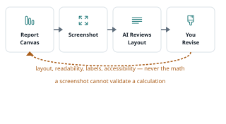
Screenshot loop Build, screenshot, get AI’s read on layout and labeling, revise. The loop never asks AI to confirm a number — a chart can look completely reasonable while being calculated incorrectly. What this catches: titles that do not explain the measure, inconsistent colors, text too small to read, slicers that are hard to find, two visuals saying the same thing, tables with too many columns. What it cannot catch: whether the discrepancy rate is actually right.
You now have: A faster design-review loop for layout and accessibility, deliberately kept separate from validating the math.
-
10
Demonstrate Validation — Five Layers
Validation is not a single step at the end. It happens after the files are combined, after relationships are built, after measures are written, and again after visuals go on the canvas.
Layer Checks Source expected files present, naming convention followed, headers consistent, dates cover the period Query files loaded as expected, row counts match, types correct, duplicates and invalid rows found Model keys unique on the dimension side, cardinality as intended, unmatched keys counted Measure known records return the expected answer, totals reconcile, blanks handled on purpose User subject-matter experts confirm the definitions; detail records trace back to source A progress note attached to the wrong task, a source column quietly renamed, a transaction line appearing twice — none of those are visual-design problems. They are data-lineage and business-rule problems, and only the five-layer sequence above catches them reliably.
You now have: A validation pass with a specific layer to blame when a number looks wrong, instead of one undifferentiated "check the report" step.
-
11
Discuss PHI
Everything in this demonstration is synthetic on purpose. If the AI tool is not approved for PHI or other restricted information, the production data does not go in, and removing a patient name is not treated as sufficient de-identification — dates, identifiers, locations and free text can all remain sensitive on their own.
- Can go in
- Column names, data types, generic table names, synthetic records, error messages, sanitized M or DAX code, a screenshot with sensitive information redacted, a description of the expected result.
- Decide first
- Whether the tool is institutionally approved for this classification of data — not whether it gives the best answer.
You now have: A working rule for what reaches an unapproved AI tool: the structure and the question, never the real row.
-
12
Close: What AI Helps With, What We Still Own
The point of this walkthrough was never to show AI building a perfect dashboard on the first try. It cannot. The point is that AI makes someone far more productive once the work around it — the dictionary, the spec, the model, the QA layer — is already structured.
AI helps with
Design questions, the data dictionary draft, Power Query M, DAX, explaining code, visual suggestions, screenshot review, documentation, validation test ideas, troubleshooting.
We still own
Choosing the right question, getting the right data, defining the business rules, protecting sensitive information, validating the output, maintaining the report, and deciding what action results from it.
You do not have to be a programmer to start. You do have to understand your data, give the AI good context, and question the answer it hands back — especially when it sounds confident.
You now have: A repeatable session structure (governance, queries, measures, visualizations) that you can reuse on the next report.
Measure Families
A build this size needs dozens of measures, and a flat list gets unmanageable fast. Four families — mirroring the base/analytical/report/QA folders in Step 6's figure — keep every measure's job clear before it gets written.
- Record count, distinct count
- Total amount, total transactions
- Total open / completed items
- Minimum / maximum activity date
- Compliance rate, risk score
- Variance, aging
- Completion / exception rate
- Average days open
- Proper-resolution percentage, due-date status
- Rolling totals
- KPI value, KPI title
- Conditional color
- Dynamic subtitle, tooltip value
- Smart Narrative text
- Selected-period label
- Source row count, loaded row count
- Difference from source
- Unmatched-key / blank-key count
- Duplicate-key count
- Total amount vs. source
- Records outside the expected date range
- Last refresh date, maximum source date
Step 4's Transaction Row Count, Distinct Transaction Count and Potential Duplicate Rows are QA-family measures. Step 6's Total Transactions and Transactions with Discrepancy are base family; Discrepancy Rate is analytical. Accuracy, completeness, consistency, timeliness and integrity get validated and documented here — not assumed because the model refreshed without an error.
Use AI Differently at Each Stage
The four-session figure at the top of this walkthrough compresses six distinct conversations. Each one succeeds or fails based on what gets handed to the AI before it starts, not on the cleverness of the prompt.
- Design specification, data dictionary
- Naming convention, source inventory
- Privacy and security checklist
- Validation plan, change log
- Exact query names, current M code
- Previous-step name, sample rows
- Expected output, the actual error message
- Whether query folding must be preserved
- Table list, grain, keys
- Intended relationships, cardinality
- Storage mode
- Known unmatched records
- Exact measure objective
- Existing base measures to build on
- Filter-context requirements
- Sample records, expected output
- Audience, business question
- Available measures, required filters
- Screenshot
- Screen size, accessibility needs
- User guide, technical documentation
- Field glossary
- Refresh and troubleshooting instructions
- Validation record, release notes
Ask the modeling session to flag ambiguity, many-to-many risk and possible dimension tables instead of accepting the first model it proposes. Ask the DAX session to explain why a measure works and to hand back a QA measure alongside it, not just the formula.
Prototype vs. Production
Everything above can start with approved Excel or CSV files, a governed SharePoint folder, Power BI Desktop, a documented data dictionary, synthetic test data and a manual refresh. That is a legitimate way to prove value with constrained resources. The distinction that matters is that a prototype should not quietly become a permanent operational report without an owner, security review, refresh monitoring, validation and documentation attached to it.
Plan Access, Deployment, and Ownership Early
A report is not finished when it works in Power BI Desktop. “Who owns this after I move on” is worth answering before publishing, not after a refresh breaks.
- Workspace, report and source ownership
- Refresh credentials
- Access groups and intended audience
- Row-level security, if required
- Support contact
- Refresh monitoring, usage monitoring
- Backup developer
- Change-management process, retirement plan
Subscriptions and alerts lower the barrier further: filtered views, recurring subscriptions and Smart Narrative summaries mean a user does not have to remember to open the dashboard, and a proactive alert can flag a discrepancy-rate threshold the moment it is crossed — turning the report from something people check into something that notifies them. For a large distribution with row-level security, dynamic subscriptions render each recipient's permitted content separately, so test the capacity impact before turning them on broadly.
Fifteen Questions for IT or Analytics
- Can I use Power BI Desktop?
- Where should the report be published?
- Is Copilot enabled?
- Is a gateway required?
- Is there already a governed data product?
- Import, DirectQuery, or composite?
- Is incremental refresh supported?
- Is PHI included, and who is the data owner?
- Is row-level security needed?
- Can users export underlying data?
- Who owns the report after deployment?
- Is there a report that already meets the need?
- How is access reviewed over time?
Twelve Warnings
- AI can produce confident but incorrect answers.
- Valid code does not mean valid business logic.
- Poor naming causes poor AI interpretation.
- A weak data model creates unnecessary DAX complexity.
- Local source files create refresh and continuity problems.
- Weekly SharePoint extracts eventually create a volume problem.
- Changing source columns can silently break a report.
- Many-to-many relationships can inflate totals.
- Screenshots help with visual review but do not validate calculations.
- No PHI or restricted information belongs in an unapproved AI tool.
- A report without an owner and a maintenance process will degrade.
- Always retain a source reconciliation and QA layer.
Set Realistic Expectations
AI compresses the technical production time. It does not compress the organizational time — and conflating the two is how a demo timeline turns into a missed deadline.
AI substantially reduces time spent on
Initial M code, drafting DAX, documentation, troubleshooting errors, suggesting visual layouts, explaining unfamiliar concepts, generating test cases, flagging performance concerns, reading screenshots, drafting user instructions.
AI does not reduce time spent on
Obtaining data access, understanding the business process, cleaning inconsistent sources, resolving unclear ownership, validating results, correcting source-system problems, securing approvals, configuring access, testing refreshes, training users, maintaining the report.
The difficult part of a report like this is rarely the chart. It is getting the correct data, reconciling fields across systems, defining the business rules, deciding who gets access, validating the result, and deciding where the report is owned going forward.
Go Deeper
This page stops at a working one-page report. The technical depth lives on two pages that already exist, so it is linked rather than repeated.
- Data landscape: the fields to request from cabinets, the EMR, scheduling and HR.
- Star-schema model: five fact tables, seven dimensions and the relationship rules for a multi-source report.
- Power Query recipes: date table, user identity merge, off-hours classifier, minutes-to-waste.
- DAX library: tested measures for waste rate, peer benchmarking, late waste, overrides and discrepancies.
- Governance: HIPAA in the Power BI service, row-level security and DEA recordkeeping.
- Analytics Dashboard Blueprint: the KPI definitions and review cadence behind the gallery.
The prompt library has tested wording for every "Ask the AI" box on this page: describing columns, defining a measure, generating a synthetic sample and asking for an explanation.
Open the Prompt Library